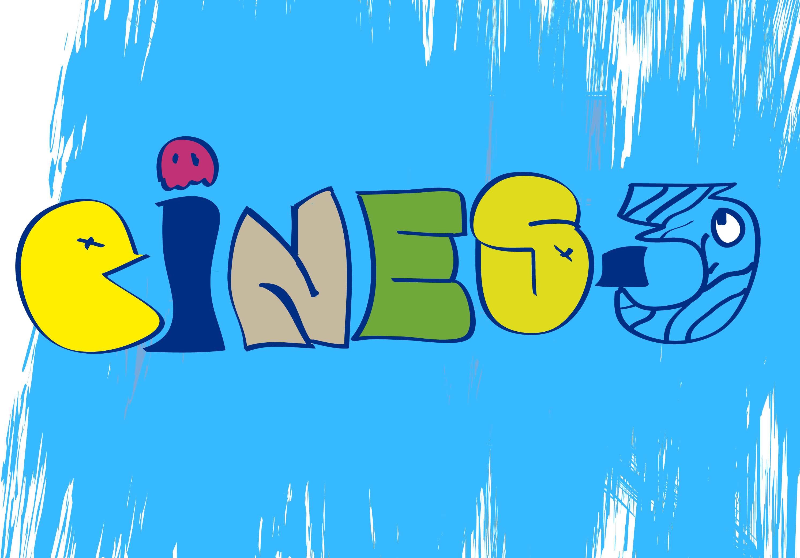

Cines-3
04/03/2025
Pagina de cine que nos muestra todas las peliculas a estrenar este año 2025 y sus trailers
Sean bienvenidos a nuestra página CINES-3.
El propósito de esta página es informar sobre los ESTRENOS que vienen a la PANTALLA GRANDE este 2025.
En esta página podrán encontrar información sobre películas que se aproximan este año, tanto calificaciones por críticos, como trailers y fechas de estreno.
Origen de la pagina:
Esta pagina originó por un proyecto de primer parcial en sexto semestre de preparatoria, más allá de un proyecto queremos aprender a usar el código html y así poder hacer nuestras propias páginas web sin necesidad de que sea por la escuela ya sea con fines financieros, publicitarios, entretenimiento o personales, el nombre "CINES-3" origino por una lluvia de ideas entre los creadores de la página el término "CINES" se percibe como "sin es" y el "3" que en conjunto forman "SIN ESTRÉS" dando a entender que es una página acerca de la industria del cine y es fácil de usar sin necesidad de estresarte sin saber que picar, viene siendo algo simple para alguien que disfrute lo simple, pueden disfrutar de una simple pagina hecha por estudiantes de una institución y sin mas que decir los dejamos interactuar con nuestra página.
derechos reservados ©